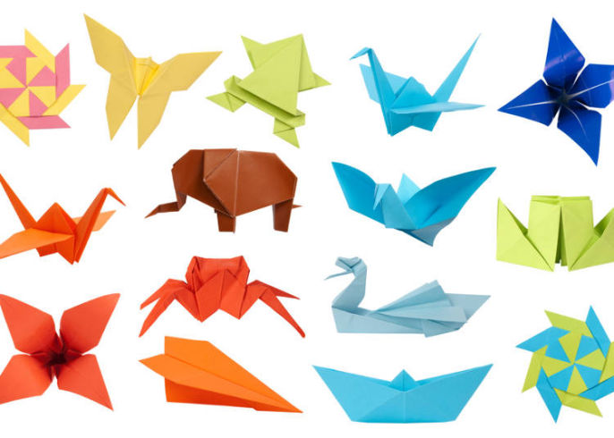
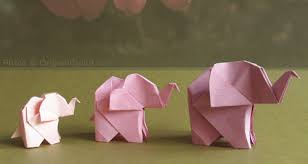

Origami Introduction
Did you know that origami came from the Japanese words 'oru' meaning to fold and 'gami' meaning paper ?
And that's exactly what we do here - fold paper !
There's nothing quiet like the joy you get from transforming a plain square piece of paper into an animal, flower , furniture or container.

Elephant
- Elephants communicate through vibrations.
- Elephants have 150,000 muscles units in their trunk.
- The tusks are actually enlarged inscisors which appear first when they are around 2 years old.

Rabbit
- Rabbits perform an athletic leap called 'binky' when they are happy.
- Rabbit eyes are on the side of their head meaning,they can see all the way around them.
- Like cats,rabbits also purr when they are content and relaxed.